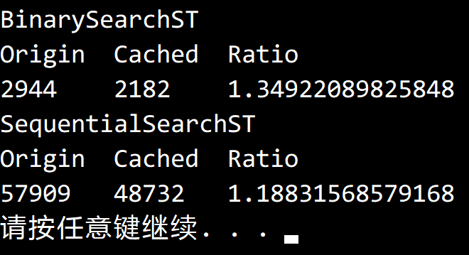

© 2019 《算法（第四版）》C# 题解 | Provided By 沈星繁
搜索解答
目前已完成到 3.1
3.1.25
上次更新：2019-03-02
发现了题解错误/代码缺陷/排版问题？请点这里：如何：提交反馈 。
题目
3.1.25
缓存。因为默认的 contains() 的实现中调用了 get()，
所以 FrequencyCounter 的内循环会将同一个键查找两三遍：
if (!st.contains(word)) st.put(word, 1);
else st.put(word, st.get(word) + 1);
为了能够提高这样的用例代码的效率，我们可以用一种叫做缓存的技术手段，
即将访问最频繁的键的位置保存在一个变量中。
修改 SequentialSearchST 和 BinarySearchST 来实现这个点子。
解答
英文原文指的是 most recently accessed key，因此指的是最近访问的键。
实现比较简单，先在类中定义一个新的成员 cache 作为缓存，
然后修改 Get 方法，在实际查找之前先检查缓存，如果缓存未命中则在查找之后更新它。
要注意的是缓存指向内容的有效性，在数组中指的是下标是否有效，在链表中指的是结点是否为空。
利用《双城记》测试的结果：

代码
BinarySearchST
cache 是一个 int 类型的变量，代表下标。
在二分查找前先检查缓存，要注意cache超出数组大小的情况。
如果缓存未命中，则进行二分查找，并在返回结果前更新缓存。
public TValue Get(TKey key)
{
if (key == null)
throw new ArgumentNullException("argument to Get() is null");
if (IsEmpty())
return default(TValue);
if (this.cache < this.n && this.keys[this.cache].Equals(key)) // 缓存检查
return this.values[this.cache];
int rank = Rank(key);
if (rank < this.n && this.keys[rank].Equals(key))
{
this.cache = rank; // 更新缓存
return this.values[rank];
}
return default(TValue);
}
SequentialSearchST
cache 是一个结点类型的变量，代表一个键值对。
类似的，在顺序查找前先检查缓存，如果缓存未命中则更新缓存。
要注意的是如果缓存的结点被删除，需要将缓存置为 null。
Get() 方法
public TValue Get(TKey key)
{
if (key == null)
throw new ArgumentNullException("key can't be null");
if (this.cache != null && this.cache.Key.Equals(key)) // 检查缓存
return this.cache.Value;
for (Node pointer = this.first; pointer != null; pointer = pointer.Next)
{
if (pointer.Key.Equals(key))
{
this.cache = pointer; // 更新缓存
return pointer.Value;
}
}
return default(TValue);
}
Delete() 方法
public void Delete(TKey key)
{
if (key == null)
throw new ArgumentNullException("key can't be null");
Node before = null, target = this.first;
while (target != null && !target.Key.Equals(key))
{
before = target;
target = target.Next;
}
if (target == this.cache) // 删除缓存
this.cache = null;
if (target != null)
Delete(before, target);
}